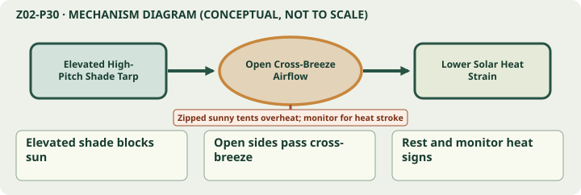

Z02-P30 · Shelter and housing · New manuscript
Adapt warm-weather tarp and shade pitch for solar heat and airflow
Reduce direct solar radiation while maximizing cross-breeze ventilation during hot or humid weather.
When it applies · Hot sunny camps, midday rest stops and heat-wave outdoor delays where enclosed tents overheat rapidly.
Equipment · Light-colored or reflective tarp, trekking poles or legal attachment points, guylines and safe drinking water.

Actions
- Pitch an elevated open tarp or canopy high enough for unobstructed cross-breeze airflow beneath it, avoiding dark enclosed tents during midday sun.[E19, E08, E26]
- Angle the shade canopy to track the sun's afternoon arc and orient the open sides to capture prevailing breeze rather than trapping stagnant hot air.[E19, E26, ED]
- Pair shaded rest with reduced midday exertion, cool hydration and continuous group monitoring for heat exhaustion or heat stroke.[E08, E26, T09]
Failure recognition · Resting inside a zipped sun-baked tent during a 95°F afternoon, driving interior heat index far above ambient air temperature.[E19, E08, T09]
Verify · Confirm full overhead shade across the rest area, steady air movement beneath the canopy and easy access to safe drinking water.[E19, E08, ED]
Stop or change course · If anyone develops confusion, slurred speech, collapse or stops coping with heat, call 911 and begin rapid cooling immediately.[T05, T09, E26]
Evidence and editorial notes
- E08 · CDC · About Heat and Your Health (current web edition)
- Section: Protect yourself from heat · Conditions: Outdoor activity in hot conditions
Support: Limit exertion in hot periods, take breaks in cooler places and monitor for illness.
Limitations: High humidity reduces sweat evaporation and raises heat strain at lower air temperatures. · Conflicting evidence: None; aligns with NWS-HEAT and NIOSH-H.
Editorial note: Anchors shade, pacing, and hot-weather shelter selection. · Specialist reviewer: Heat illness and emergency medicine
Primary source · checked 2026-11-24 - E19 · NWS · Heat Safety (current web edition)
- Section: Heat Safety Resources · vulnerability and linked protective actions · Conditions: High temperature and humidity outdoors
Support: Use current heat alerts and reduce exposure or seek cooled shelter when conditions warrant.
Limitations: This landing page does not quantify tent warming or universal evaporative cooling. See D21 for the bounded indoor fan guidance. · Conflicting evidence: None; aligns with CDC-HEAT and READY-HEAT.
Editorial note: Drives warm-weather tarp/shade configuration and ventilation cards. · Specialist reviewer: Heat safety and shelter design
Primary source · checked 2026-11-24
Current assessment · A04-E19 (2026-11-25) · Bounded support confirmed (A04): Follow local alerts and reduce exposure with appropriate cooling. Clinical heat injury, device limits and conflicting threats remain separate. Limits: Specialist review PENDING (Heat safety and shelter design); publication HOLD. All release decisions pending. - E26 · FEMA / Ready.gov · Extreme Heat (current web edition)
- Section: Extreme Heat > Stay Safe in Extreme Heat · Conditions: Prolonged heat waves and high overnight temperatures
Support: Use ventilated shade, hydration, light breathable clothing, and cooling centers when available; monitor vulnerable companions continuously for heat exhaustion or heat stroke.
Limitations: Shaded tarps reduce radiant load but cannot replace medical cooling when core temperature rises. · Conflicting evidence: None; aligns with CDC-HEAT and NWS-HEAT.
Editorial note: Supports hot-weather shelter orientation and heat-stress stop conditions. · Specialist reviewer: Heat safety and emergency medicine
Primary source · checked 2026-11-24 - T05 · CDC NIOSH · Heat-related Illnesses (current web edition)
- Section: Heat stroke > First aid · Conditions: Heat exposure and altered mental status
Support: Heat illness may be life-threatening. Seek emergency care for suspected heat stroke and start cooling promptly.
Limitations: Delays in active cooling worsen neurologic outcomes. · Conflicting evidence: None; aligns with CDC-HEAT.
Editorial note: Core heat-emergency escalation rule. · Specialist reviewer: Emergency and wilderness medicine
Primary source · checked 2026-11-24 - T09 · CDC NIOSH · Heat-related Illnesses (current web edition)
- Section: Heat stroke > Symptoms and First aid · Conditions: Suspected heat stroke after exertion or heat exposure
Support: Confusion, slurred speech or loss of consciousness can indicate heat stroke. Call 911 and cool the person promptly.
Limitations: Exertional heat stroke can occur even in moderate ambient temperatures during heavy effort. · Conflicting evidence: None; aligns with T05.
Editorial note: Triggers immediate emergency call and cooling stop condition. · Specialist reviewer: Emergency and wilderness medicine
Primary source · checked 2026-11-24
Source lineage · CDC heat, NWS heat and Ready.gov heat guidance; new manuscript · Classification · New manuscript.